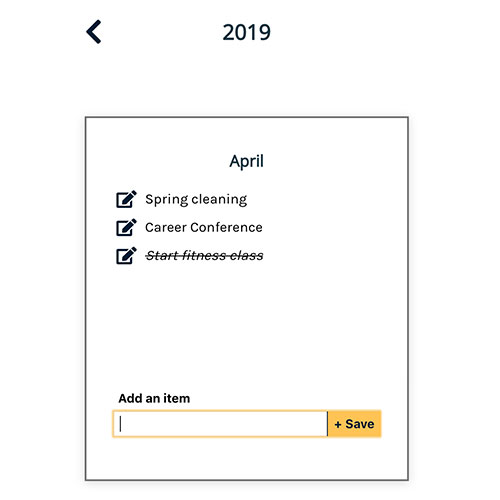
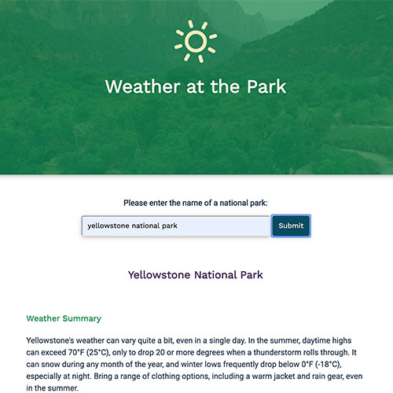
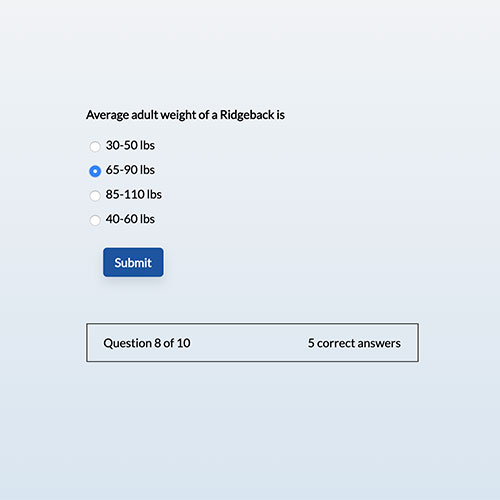
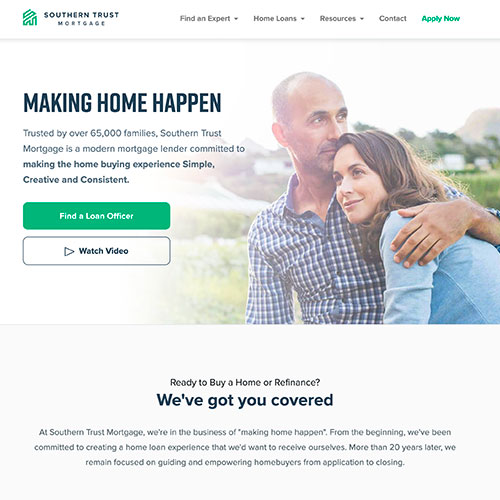

Hi, I’m Jackie. I am a full stack JavaScript developer and lifelong learner currently residing in Virginia Beach.
I spent three years building WordPress websites for mortgage lending companies before enrolling in Thinkful's JavaScript Engineering program. Now that I’ve graduated, I'm ready to use my new skills with React, Express, PostgreSQL and APIs alongside my CSS and visual design skills.
I love to build fast, responsive, engaging websites that provide simplicity for the end users. When I'm not working on a web development project or learning something new, you might find me practicing photography or hiking with my rhodesian ridgeback.
Selected Work
Chiclet
- Description: Chiclet is a monthly - yearly planner. Users can add special events, goal deadlines, or focus themes to the months and the app provides a view of their plans for the entire year. Users can update existing items and delete items. Alternatively, the app can be used as an accomplishment record keeper rather than a planner of future milestones. Either way, users have an interactive bird's eye view of the year.
- Built with: HTML, CSS3, React, Node.js, Express, PostgreSQL
- Live link: https://chiclet.now.sh/
- GitHub:
Weather at the Park
- Description: This app fetches and combines data from the National Parks API and the StormGlass API to allow users to submit the name of a national park and view a year-round weather summary and some current weather conditions. This information can help the user plan what to pack for their trip to the park.
- Built with: HTML, CSS3, jQuery
- Live link: https://jcqln832.github.io/Weather-at-the-park/
- GitHub: https://github.com/Jcqln832/Weather-at-the-park
Quiz App
- Description: This responsive, accessible quiz takes the user through ten questions about the rhodesian ridgeback dog breed. Users navigate from the landing page to the question sets answering one question at a time, with the option to restart the quiz at the end. The user receives feedback at each stage - including their current and final score, which question they're on, whether or not their answer was correct, and what the correct answer was. The JS code includes event listeners and clearly named functions for providing user feedback to the screen.
- Built with: HTML, CSS3, jQuery
- Live link: https://jcqln832.github.io/Quiz-App/
- GitHub:https://github.com/Jcqln832/Quiz-App
Southern Trust Mortgage
- Description: The new southerntrust.com is built with a custom WordPress theme and utilizes Bootstrap 4 for layout, navigation, and modals. It has a several features that are valuable in particular to a mortgage lending company with a large sales force of loan officers who need exceptional online representation. Custom features include:
- jQuery calculators payment or savings estimates
- Loan officer ID cookie which allows for a clickable pop-out sticky panel to display the loan officer's contact information on every page a user visits. This essentially allows a Loan Officer to remain visible and accessible, helping ensure borrowers stay connected to the Loan Officer who originally brought them to Southern Trust Mortgage.
- Separate corporate and individual Loan Officer blogging capability.
- Robust search filters for locating branches or individual Loan Officers with the help of the WP_Facets plugin for WordPress.
- Built with: HTML, SCSS, jQuery, WordPress(PHP)
- Live link: https://www.southerntrust.com